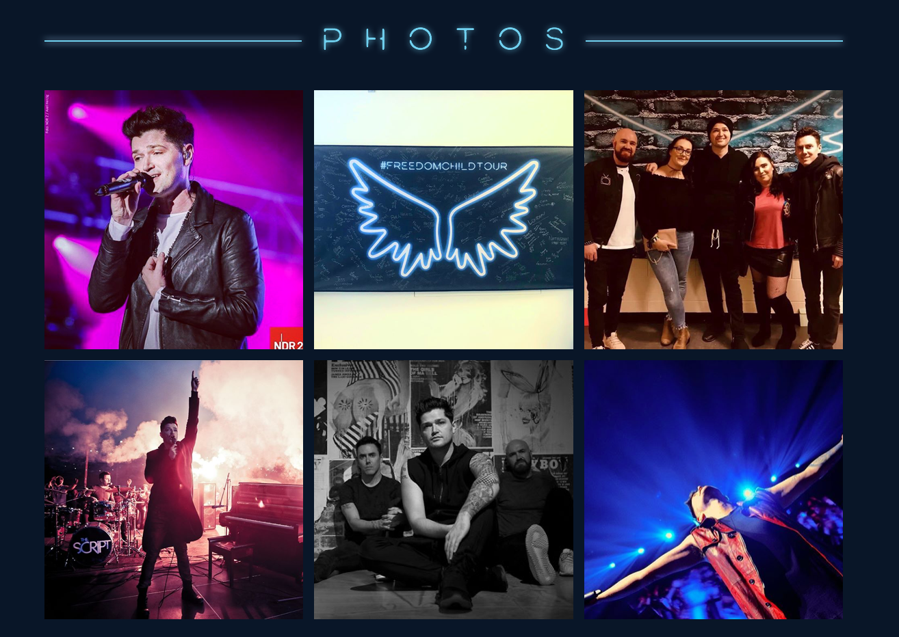
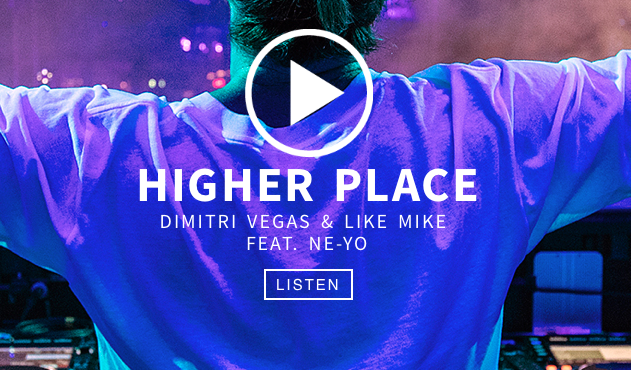

Concurrentie analyse
The Script
- Functionele social medialogos. Hierdoor kan de muziekband zijn sociale profielen groeien.
- Sociale media is tegenwoordig zeer belangrijk en zal ook het eerste zijn wat jongeren willen bekijken, dit omdat ze hierdoor hun favorite band vand dichtbij kunnen volgen. Door duidelijk de social media logos to vermelden op de frontpage zal je de interactie op de sociale platformen verhogen.
- Menu bar met diverse opties
- Op veel websites van muziekbands is de menubar slecht een nutteloze tool, bij deze website staat er een dudielijke menu waarmee je zonder probleem door de website kan navigeren. Er zijn ook gene onnodige uitschuif menus gemaakt.

- Een overzicht van de concerten
- Op deze pagina wordt zeer duidelijk aangegeven waar en wanneer de band zal optreden.
- Instagram fotos linked op de pagina
- Instagram is een vand de meest populaire social media platforms en ook het platform waar de band een following aan het opbouwen is. Het is dus zeer belangrijk om dit te vermelden op de website en de bezoeker een kans te geven om de sfeerbeelden te bekijken
- Men plaatst vaak gewoon fotos op een pagina, maar dit betekent niet veel wanneer jongeren de band niet niet kunnen volgen op social media, deze website heeft dit goed gedaan door de pagina rechtstreeks aan Instagrma te linken. Zo hoeven ze ook geen 2 keer dezelfde fotos te uploaden maar kan het allemaal in 1 keer

- Geen sterk contrast tussen voor en achtergrond
- Door het slechte contrast lijkt de pagina chaotisch en zijn er elementen die niet goed uitkomen
Arctic Monkeys
- De meest recente music video staat op de pagina
- Dit spoort de bezoeker aan om te luisteren en zo mogelijk de rest van de playlist te beluisteren (gelinked aan youtube)
- Het is ook een zeer simpel en clean desing met een hoog contrast. Dit zorgt ervoor dat de website er professioneel en aangrekkelijk uitziet.

- Apps gelinked op de website
- Er zijn diverse links aanwezig die je naar de verschillende platformen en apps zullen brengen waar de muziek van de band kan beluisteren. Itunes is hier een perfect voorbeeld van, zo kan de gebruiker in enkele klicks de nieuwste hits van de band downloaden.
- Sociale media in de rechterbovenhoek duidelijk afgebeeld
- Geen logo aanwezig.
- Op sommige paginas iets te sober aangekleed waardoor de site leeg lijkt.
Dimitri Vegas & Like Mike
- Duidelijk logo
- Het logo versterkt het imago vand de website, het geeft onmiddelijk duidelijk weer over wie of wat de site gaat. Het kleur van het logo is ook contrasterend met gelijk welke achtergrondkleur die er verschijnt (er wordt gebruik gemaakt van een automatische gallery voor de achtergrondfotos
- Onmiddellijk de mogelijkheid om hun muziek te spelen
- dit is een origineel idee die ik nog niet gezien heb bij andere websites. Op deze website geven ze de gebruiker de optie om onmiddelijk hun meest recente hit te beluisteren, wat aangenaam kan zijn terwijl de gebruiker de rest van de website bezoekt.Het is ook een zeer clean ontwerp met genoeg contrast tussen voor en achtergrond

- Music video zeer clean op de pagina

- De ecommerce store is niet in hetzelfde thema als de vorige website. Dit is op zich geen groot probleem omdat het een aparte website is maar het zou toch beter aanvoelen als het in hetzelfde thema zou zijn